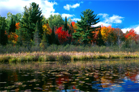
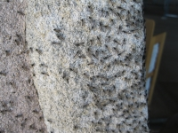

Welcome!
We’ve designed this Great Lakes migratory bird stopover web site to further conservation efforts for migrating birds in the Great Lakes region.
We hope that this portal can provide information on stopover sites and ecology within the Great Lakes region to a variety of audiences, including natural resource managers, municipal planners, entities siting energy installations and other infrastructure, and even businesses interested in seeing where migratory birds and the birders they attract might be concentrated.
You can use this website to:
-
View the About page to learn more about stopover sites, why they are important to birds and conservation, and what we hope you will do to help migratory birds.
-
Apply the models judiciously by reading how attributes were scored to rank areas as stopover sites and caveats associated with these models by reading the Model Attributes/Caveats Page.
-
Check out maps of predicted stopover sites within approximately 20 miles of Great Lakes shorelines*; Click here for help on the map page.
-
Use these maps, underlying data layers, and analysis tools to rank, compare, and/or prioritize stopover sites for conservation or restoration, and get help doing so;
-
Download data predicting stopover habitat throughout the region, and find out more about how they were produced;
-
Tap into other resources needed to make conservation decisions, such as links to other relevant data sources for your area of interests and information on what other groups are working on.
-
Find out more about stopover sites, migratory bird ecology, conservation efforts throughout the region, and how you can get involved through links and references on the Resources page!
-
See these maps and data in action and understand how others are using them.
What are stopover sites?
Stopover sites are places where migrating birds stop to rest, refuel and seek shelter en route between breeding and wintering areas.
Why do they need to be conserved?
Mortality of birds during migration is high, and particularly in the central part of the United States, there are fewer and fewer places with remaining natural habitat in good condition that can shelter and fuel these birds during this vulnerable period.
Where is the stopover habitat within the Great Lakes region?
Migratory birds, including landbirds, shorebirds, and waterfowl, are most concentrated at food rich sites close to Great Lakes shorelines. For landbirds, Great Lakes shorelines are “fallout” areas, areas where birds seek immediate refuge after encountering one of the Great Lakes.
How can stopover sites be protected/conserved?
Stopover sites can be protected directly through fee acquisition, conservation easements, managing land that favors migrant use and provides good feeding sites, and indirectly by land use regulations and voluntary land management recommendations.
*except Lake Superior, where stopover sites are poorly known and less threatened
Use the tabs above to navigate the site.
Check out the tutorial by clicking over to the Help tab for suggestions based on your interests.
Already have a map saved? Click here.
For website content help or suggestions, technical problems or other questions about the site please contact michigan@tnc.org.
|

Caroline Lake. Good landbird stopover site. ©TNC archives
|
|
Scarlet Tanager. ©TNC archives
|
|

Midges, an important migrant food resource for migrants along the Great Lakes. Photo credit: © Gust Annis
|